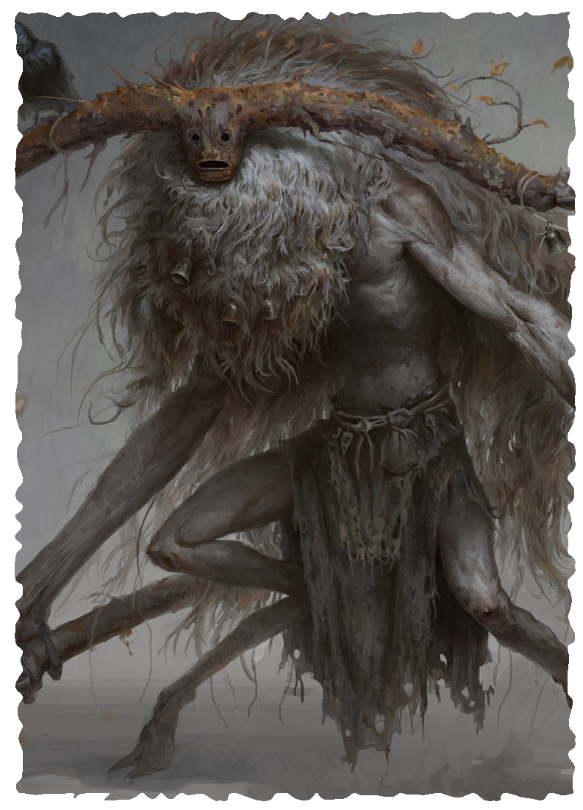

DRUID
The druids belong to the Old Faith, one of the oldest religions in the Empire. With origins going back all the way to the first people to inhabit the lands, it is a religion whose roots are secret, created to honor dark, often violent gods, and steeped in strange practices. Druids count themselves friend to any who live in the wild or along its borders, but they guard the secrets of their religion, revealing its mysteries only to those who have undergone the rites that open the way to their enigmatic society.
Many druids use Nature and Primal magic, though some learn magic from elemental traditions or traditions associated with the faerie, such as Enchantment and Illusion. Although druids venerate all the old gods, a few align themselves with one or two in particular. The Horned King, the Maiden in the Moon, and the Queen of Summer are all common patrons.
Above all, druids see themselves as guardians of the natural world. They protect the uncut woods, the unspoiled wilds, and the places far beyond civilization’s grasp. They work alongside settlers and pioneers to help them withstand the rigors of the frontier while instilling in them respect for the land and its resources. Druids protect specific sites, marking them with standing stones, or travel the world, lending a hand to those in need.
LEVEL 3 DRUID
Attributes Increase two by 1
Characteristics Health +4, Power +1
Languages and Professions Add one State or Wild Profession.
Magic Make two choices. For each choice, you discover the Life, Nature, or Primal tradition or learn one spell from those traditions.
Druid Mysteries You learned the ancient druidic mysteries as part of your initiation. You can do all of the following:
- Identify any animal or plant you see.
- Know if water and food you can see are safe to consume.
- Accurately predict the weather up to 24 hours in advance provided you are outside and can see the sky.
- Move at full Speed across difficult terrain created by natural terrain features.
- Leave tracks when moving across natural terrain only when you choose.
Beast Within As an action, you become beastly for 1 minute. Until the effect ends, your eyes glow, fur covers your body, your nails lengthen into claws, and your teeth become fangs. During this time, you are considered to be under the effects of the Beast Within spell. Additionally, you gain darksight and a +2 bonus to Speed, and your attacks with unarmed strikes and natural weapons deal 1d6 extra damage.
LEVEL 6 DRUID
Characteristics Health +4
Magic You learn one spell.
Tree Walker Once per round while you are moving, you can move into a space occupied by a living tree and immediately exit from a space occupied by a tree within medium range of the tree whose space you entered. You can choose to exit from the tree you entered, moving into an open space.
LEVEL 9 MASTER DRUID
Characteristics Health +4, Power +1
Magic You learn one spell.
Resist Elements You are never at risk of becoming fatigued from exposure. You take half damage from cold, lightning, thunder, and fire.